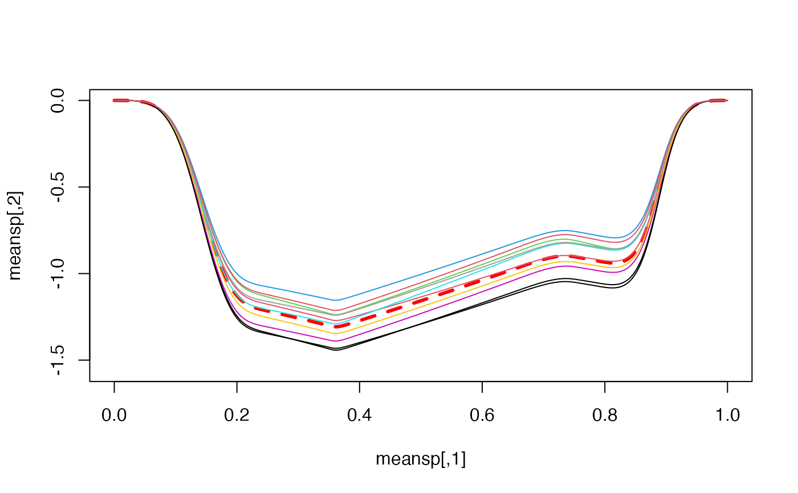
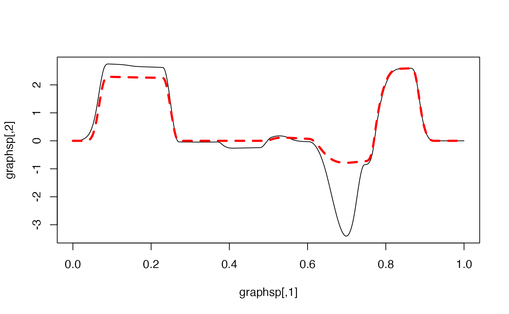

Random splines
rspline.RdThe function simulates a random Splinets-object that is made of random splines with the center
at the input spline and the matrix of derivatives has the added error term of the form
$$
\boldsymbol \Sigma^{1/2}\mathbf Z \boldsymbol \Theta^{1/2},
$$
where \(\mathbf Z\) is a \((n+2)\times (k+1)\) matrix having iid standard normal variables
as its entries, while \(\boldsymbol \Sigma\) and \(\boldsymbol \Theta\) are matrix parameters.
This matrix error term is then corrected by one of the methods and thus resulting in a matrix of derivatives at knots corresponding to a valid spline.
Arguments
- S
Splinets-object withn+2knots and of the order of smoothnessk, representing the center of randomly simulated splines; When the number of splines in the object is bigger than one, only the first spline in the object is used.- N
positive integer, size of the sample;
- Sigma
matrix;
If
(n+2)x(n+2)matrix, it controls correlations between derivatives of the same order at different knots.If a positive number, it represents a diagonal
(n+2)x(n+2)matrix with this number on the diagonal.If a
n+2vector, it represents a diagonal(n+2)x(n+2)matrix with the vector entries on the diagonal.If
NULL(default) represents the identity matrix.
- Theta
matrix;
If
(k+1)x(k+1), this controls correlations between different derivatives at each knot.If a positive number, it represents a diagonal matrix with this number on the diagonal.
If a
k+1vector, it represents a diagonal matrix with the vector entries on the diagonal.If
NULL(default), it represents thek+1identity matrix;
- mthd
string, one of the three methods: RCC, CR-LC, CR-FC, to adjust random error matrix so it corresponds to a valid spline;
References
Liu, X., Nassar, H., Podg\(\mbox{\'o}\)rski, K. "Dyadic diagonalization of positive definite band matrices and efficient B-spline orthogonalization." Journal of Computational and Applied Mathematics (2022) <https://doi.org/10.1016/j.cam.2022.114444>.
Podg\(\mbox{\'o}\)rski, K. (2021)
"Splinets – splines through the Taylor expansion, their support sets and orthogonal bases." <arXiv:2102.00733>.
Nassar, H., Podg\(\mbox{\'o}\)rski, K. (2023) "Splinets 1.5.0 – Periodic Splinets." <arXiv:2302.07552>
See also
is.splinets for diagnostics of the Splinets-objects;
construct for constructing a Splinets-object;
gather for combining Splinets-objects into a bigger object;
subsample for subsampling Splinets-objects;
plot,Splinets-method for plotting Splinets-objects;
Examples
#-----------------------------------------------------#
#-------Simulation of a standard random splinet-------#
#-----------------------------------------------------#
n=17; k=4; xi=sort(runif(n+2)); xi[1]=0; xi[n+2]=1
S=matrix(rnorm((n+2)*(k+1)),ncol=(k+1))
spl=construct(xi,k,S) #Construction of the mean spline
#>
#> Using method RRM to correct the derivative matrix entries.
#>
#>
#> DIAGNOSTIC CHECK of a SPLINETS object
#>
#> THE KNOTS:
#>
#>
#> THE SUPPORT SETS:
#>
#> The support sets for the splines are equal to the entire range of knots.
#>
#>
#> THE DERIVATIVES AT THE KNOTS:
#>
#> The boundary zero conditions are not satisfied for spline 1 in the input 'Splinets' object.
#> Correction of the first and last rows of the derivative matrices are made in the output 'Splinets' object.
#>
#> The spline 1 'ths highest derivative at the central knot is zero.
#> Now it is set to zero.
#>
#> The derivative matrix for spline 1 does not satisfy the smoothness conditions (up to the accuracy SLOT 'epsilon').
#> The standard error per matrix entry is 1.480098 .
#>
#>
#> Correction of the LHS part of the matrix
#> There are less than 6 knots, the first 1 entries of the 6 nd row counting from the end in the input will be changed in the output.
#>
#>
#> Correction of the RHS part of the matrix
#> There are less than 6 knots, the first 1 entries of the 6 nd row counting from the end in the input will be changed in the output.
#>
#>
#> Correction of the LHS part of the matrix
#> Correction of the RHS part of the matrix
#> The output object has the derivative matrix corrected by the RRM method.
#>
#> The matrix derivative is now corrected by method RRM .
RS=rspline(spl)
graphsp=evspline(RS) #Evaluating the random spline
meansp=evspline(spl)
RS=rspline(spl,5) #Five more samples
graphsp5=evspline(RS)
m=min(graphsp[,2],meansp[,2],graphsp5[,2:6])
M=max(graphsp[,2],meansp[,2],graphsp5[,2:6])
plot(graphsp,type='l',ylim=c(m,M))
lines(meansp,col='red',lwd=3,lty=2) #the mean spline
for(i in 1:5){lines(graphsp5[,1],graphsp5[,i+1],col=i)}
#-----------------------------------------------------#
#------------Different construction method------------#
#-----------------------------------------------------#
RS=rspline(spl,8,mthd='CRLC'); graphsp8=evspline(RS)
m=min(graphsp[,2],meansp[,2],graphsp8[,2:6])
M=max(graphsp[,2],meansp[,2],graphsp8[,2:6])
plot(meansp,col='red',type='l',lwd=3,lty=2,ylim=c(m,M)) #the mean spline
for(i in 1:8){lines(graphsp8[,1],graphsp8[,i+1],col=i)}
#-----------------------------------------------------#
#-------Simulation of with different variances--------#
#-----------------------------------------------------#
Sigma=seq(0.1,1,n+2);Theta=seq(0.1,1,k+1)
RS=rspline(spl,N=10,Sigma=Sigma) #Ten samples
RS2=rspline(spl,N=10,Sigma=Sigma,Theta=Theta) #Ten samples
graphsp10=evspline(RS); graphsp102=evspline(RS2)
m=min(graphsp[,2],meansp[,2],graphsp10[,2:10])
M=max(graphsp[,2],meansp[,2],graphsp10[,2:10])
plot(meansp,type='l',ylim=c(m,M),col='red',lwd=3,lty=2)
for(i in 1:10){lines(graphsp10[,1],graphsp10[,i+1],col=i)}
m=min(graphsp[,2],meansp[,2],graphsp102[,2:10])
M=max(graphsp[,2],meansp[,2],graphsp102[,2:10])
plot(meansp,type='l',ylim=c(m,M),col='red',lwd=3,lty=2)
for(i in 1:10){lines(graphsp102[,1],graphsp102[,i+1],col=i)}

#-----------------------------------------------------#
#-------Simulation for the mean spline to be----------#
#------=----defined on incomplete supports------------#
#-----------------------------------------------------#
n=43; xi=seq(0,1,by=1/(n+1)); k=3; xi=sort(runif(n+2)); xi[1]=0; xi[n+2]=1;
support=list(matrix(c(2,14,25,43),ncol=2,byrow = TRUE))
ssp=new("Splinets",knots=xi,supp=support) #with partial support
nssp=is.splinets(ssp)$robject
#>
#>
#> DIAGNOSTIC CHECK of a SPLINETS object
#>
#> THE KNOTS:
#>
#>
#> THE SUPPORT SETS:
#>
#>
#>
#> THE DERIVATIVES AT THE KNOTS:
#>
#> The partial support range case.
#> SLOT 'der' do not have properly set the dimension for spline 1 in the input 'Splinets' object.
#> In the output object, it is set temporarily to the matrix of 'ones' with the proper dimension.
#>
nssp@smorder=3 #changing the order of the 'Splinets' object
m=sum(nssp@supp[[1]][,2]-nssp@supp[[1]][,1]+1) #the number of knots in the support
nssp@der=list(matrix(rnorm(m*(k+1)),ncol=(k+1))) #the derivative matrix at random
spl=is.splinets(nssp)$robject
#>
#>
#> DIAGNOSTIC CHECK of a SPLINETS object
#>
#> THE KNOTS:
#> The Taylor expansion coefficient matrix does not have the proper number of columns.
#> It is evaluated now and assigned to the output.
#>
#>
#> THE SUPPORT SETS:
#>
#>
#>
#> THE DERIVATIVES AT THE KNOTS:
#>
#> The boundary zero conditions are not satisfied for spline 1 in the input 'Splinets' object.
#> Correction of the first and last rows of the derivative matrices over the support component 1 of spline 1 in the output 'Splinets' object.
#> The boundary zero conditions are not satisfied for spline 1 in the input 'Splinets' object.
#> Correction of the first and last rows of the derivative matrices over the support component 2 of spline 1 in the output 'Splinets' object.
#>
#> Spline 1 support 1 's highest derivative at the central knot is not zero.
#> Now it is set to zero.
#>
#> The matrix of derivatives at the knots for spline 1 , support 1 does not satisfy the splie conditions (up to the accuracy set in SLOT 'epsilon').
#> The computed standard error per matrix entry is 1.480395 .
#>
#>
#> Correction of the LHS part of the matrix
#> There are less than 5 knots, the first 2 entries of the 5 nd row counting from the end in the input will be changed in the output.
#>
#>
#> Correction of the RHS part of the matrix
#> There are less than 5 knots, the first 2 entries of the 5 nd row counting from the end in the input will be changed in the output.
#>
#>
#> Correction of the LHS part of the matrix
#> Correction of the RHS part of the matrix
#> The output object Spline 1 support 1 has the derivative matrix corrected by the RRM method.
#> Spline 1 support 2 's highest derivative at the central knot is not zero.
#> Now it is set to zero.
#>
#> The matrix of derivatives at the knots for spline 1 , support 2 does not satisfy the splie conditions (up to the accuracy set in SLOT 'epsilon').
#> The computed standard error per matrix entry is 1.233827 .
#>
#>
#> Correction of the LHS part of the matrix
#> Correction of the RHS part of the matrix
#> Correction of the LHS part of the matrix
#> Correction of the RHS part of the matrix
#> Correction of the LHS part of the matrix
#> Correction of the RHS part of the matrix
#> The output object Spline 1 support 2 has the derivative matrix corrected by the RRM method.
RS=rspline(spl,Sigma=0.05,Theta=c(1,0.5,0.3,0.05))
graphsp=evspline(RS);
meansp=evspline(spl)
m=min(graphsp[,2],meansp[,2],graphsp5[,2:6])
M=max(graphsp[,2],meansp[,2],graphsp5[,2:6])
plot(graphsp,type='l',ylim=c(m,M))
lines(meansp,col='red',lwd=3,lty=2) #the mean spline
